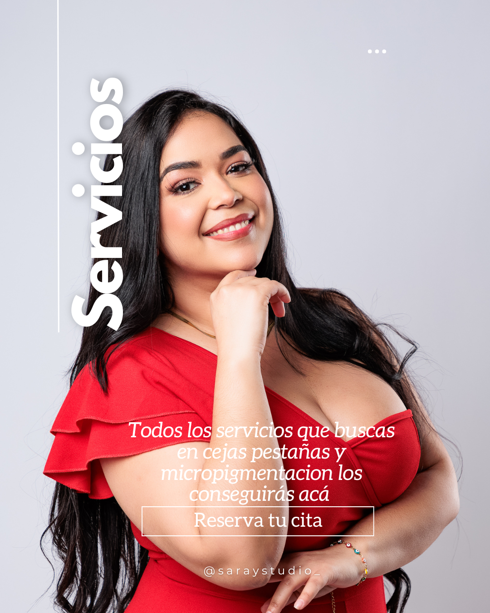

Bienvenida al universo de Saray Studio
Soy Saray, con más de 10 años de experiencia en cejas, micropigmentación y extensiones de pestañas.Te ayudo con mis técnicas en sencillos pasos a lucir increíble cada día sin depender del maquillaje.
✔ Cejas con forma
✔ Pestañas levantadas
✔ Labios con color y definición
✔ Miradas que hablan por ti
¿Lista para realzar tu belleza sin esfuerzo? üì≤ Escr√≠beme y agenda tu transformaci√≥n.